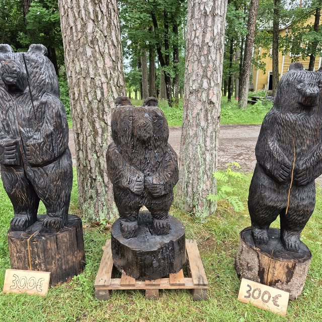
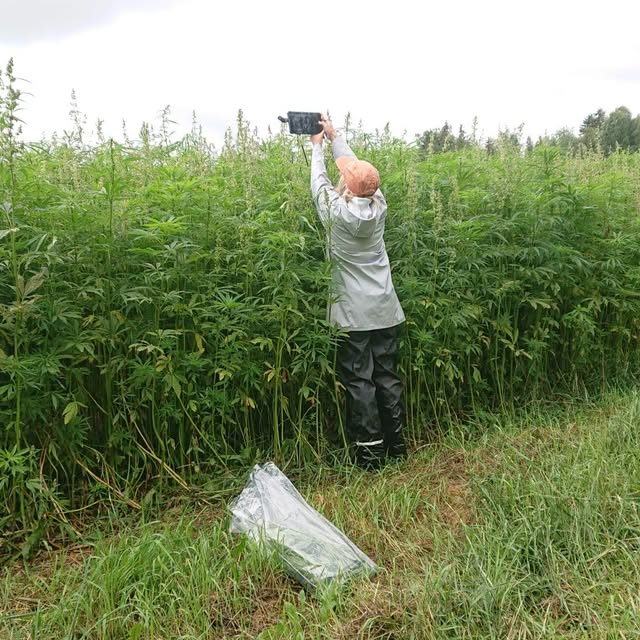
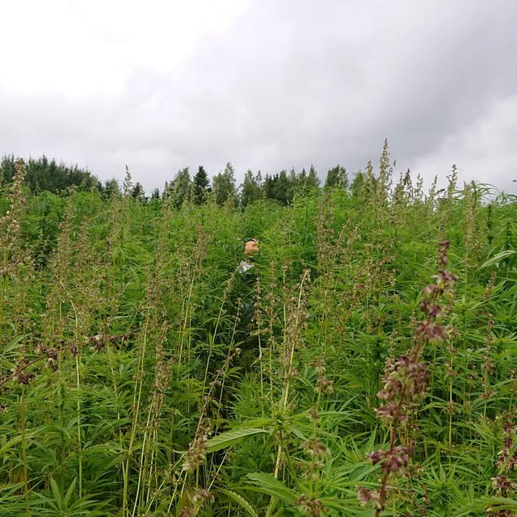
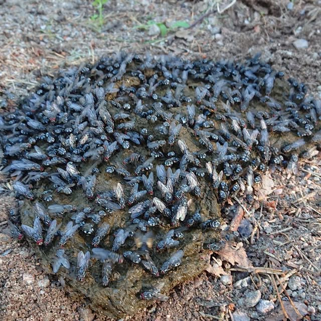
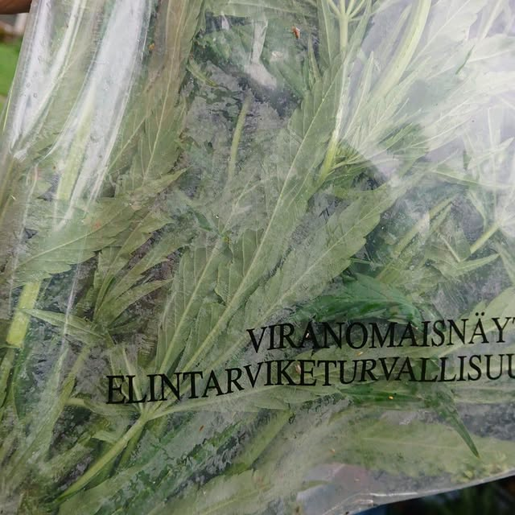
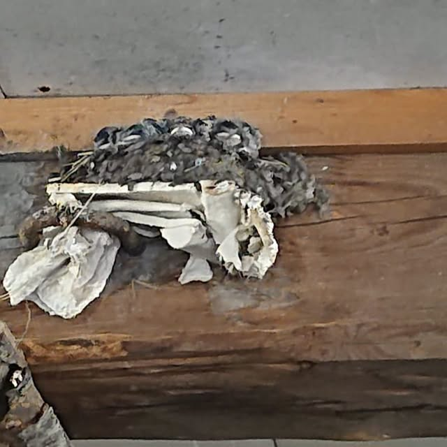
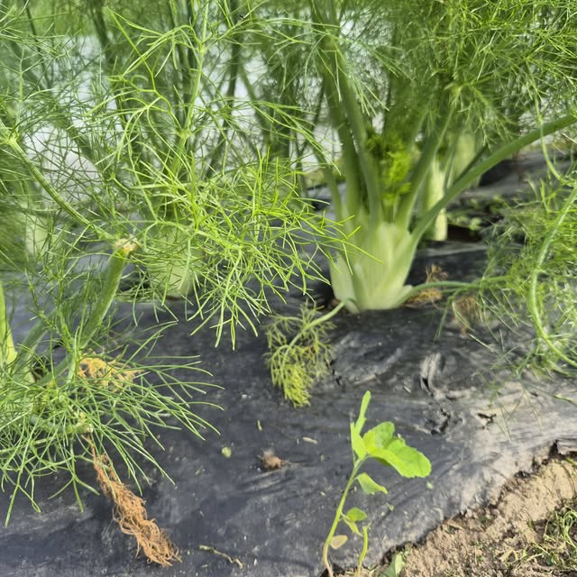
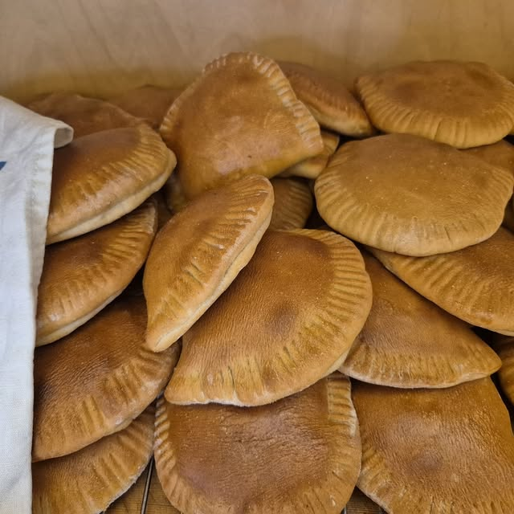
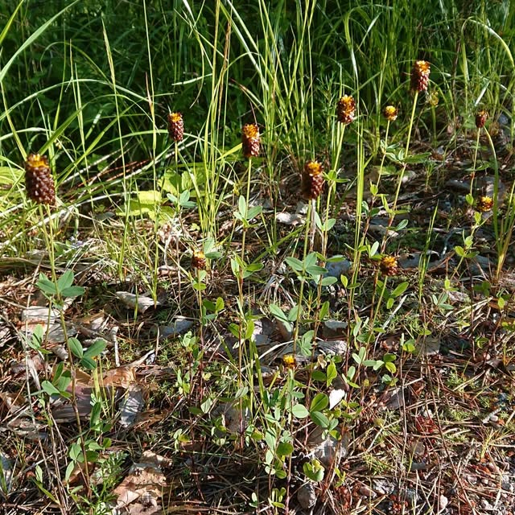

Hämeenkoski · Päijät-Häme
Luomukyyttöjä Salpauselän metsälaitumilla
Huljalan Tupalan luomukyytöt laiduntavat metsissä ja pelloilla Salpauselän maisemissa Päijät-Hämeessä. Viljelemme myös härkäpapua, öljyhamppua ja luomuvihanneksia — kaikki suoraan tilalta.

Tarinamme
Laura ja Mika Hämäläisen tila Huljaalassa
Huljalan Tupalaa emäntänä ja isäntänä pitävät Laura ja Mika Hämäläinen Huljaalan kylässä, Hämeenkoskella. Tilalla kasvatetaan luomukyyttöjä, jotka laiduntavat metsissä ja pelloilla Salpauselän maisemissa. Tilan Facebook-sivua seuraa yli 2 100 seuraajaa, jotka pääsevät mukaan tilan arkeen kylvöistä avoimiin oviin.
- Emäntä Laura ja isäntä Mika Hämäläinen pitävät tilaa
- Yli 2 100 seuraajaa Facebookissa seuraa tilan arkea
- 100 % suosittelee tilaa (10 arvostelua Facebookissa)

Kyyttömme
Itäsuomenkarjan kyyttöjä metsälaitumilla
Tilan naudat ovat luomukyyttöjä, itäsuomenkarjan alkuperäisrotua. Kyytöt laiduntavat kesät metsissä ja pelloilla Salpauselän maisemissa, mikä pitää perinnebiotooppeja avoimina ja monimuotoisina. Lihaa myydään suoraan tilalta metsälaitumelta suoraan pöytään.
- Alkuperäisrotu, joka sopii metsälaidunnukseen
- Laidunnus pitää perinnebiotoopit avoimina

Pellon antimet
Härkäpapua, öljyhamppua ja luomuvihanneksia
Naudanlihan ja nurmen lisäksi tilalla viljellään erikoiskasveja: härkäpapua, öljyhamppua sekä luomuvihanneksia kuten mangoldia ja juureksia. Pihapiirissä esitellään kasvatettavia viljelykasveja ja niistä saatavia tuotteita.
Valikoimastamme
Kyytönlihaa, härkäpapua ja öljyhamppua

Kyytönliha
Metsälaitumelta suoramyyntinä, itäsuomenkarjan luomukyytöstä.

Härkäpapu
Tilan omaa luomuhärkäpapua suoramyyntinä.

Öljyhamppu ja luomuvihannekset
Öljyhamppua sekä kausittain tuoreita luomuvihanneksia tilalta.
Kuvia tilalta
Katso millaista arki on Huljalassa





Ajankohtaista
Avoimet ovet ja tapahtumat
Avoimet maatilat Hämeessä
Klo 11–16, perinnebiotooppikierros klo 12.30. Puffetissa mm. kyyttöpasteijoita ja härkäpapumuffinsseja.
Suomen luonnon päivä
Avoimet ovet luomutiloilla klo 11.30–15.30, perinnebiotooppikierros klo 12.30.
Lähiruokapäivä
Talonväkeä ja lehmä tavattavissa sekä pikkukahvio. Muulloinkin voi tulla, mutta lehmät saattavat olla metsässä.
Kiinnostuitko tuotteistamme?
Ota yhteyttä ja kysy lisää kyytönlihasta, härkäpavusta tai öljyhampusta.
Yhteystiedot
Ota yhteyttä
-
Vanhatie 239, 16800 HämeenkoskiPäijät-Häme
-
0400 978 665Soita tai laita viestiä
-
Facebook: Huljalan TupalaNopein tapa saada viesti perille